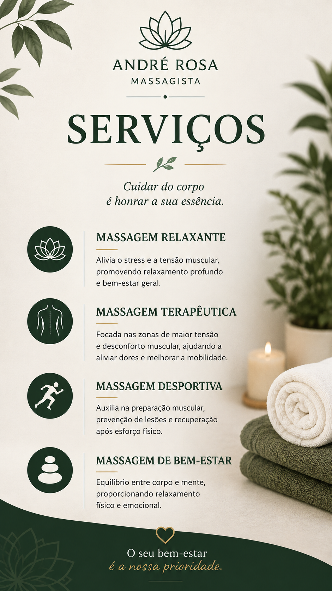
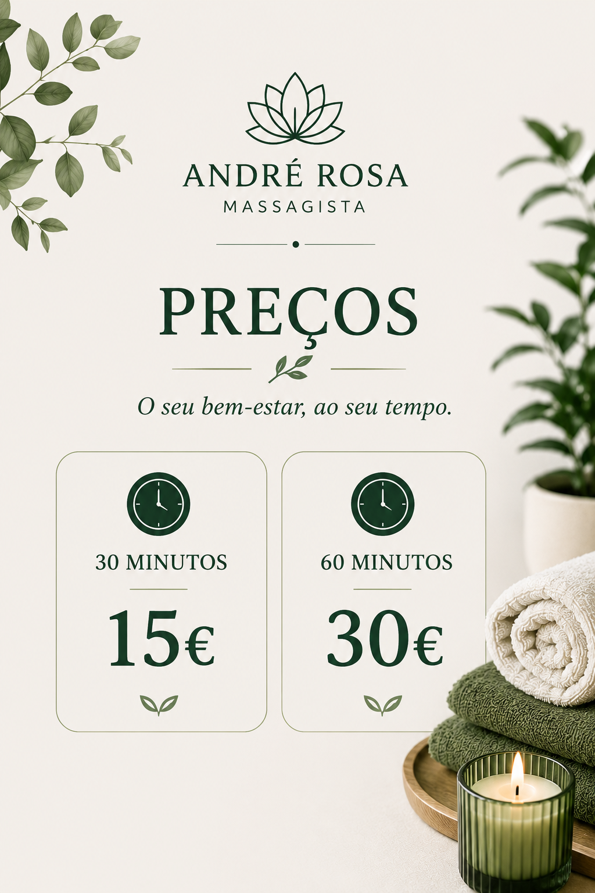

❋
Massagem de Relaxamento
Indicada para quem procura desacelerar, reduzir a sensação de tensão muscular e promover uma experiência de descanso e bem-estar.
MASSAGEM · BEM-ESTAR · RECOVERY
Massagens personalizadas em Braga, pensadas para aliviar tensão, promover relaxamento e apoiar a recuperação física.
RECOVER
•MOVE
•RESET
•RELAX
SERVIÇOS
Não precisa de ser atleta. Cada sessão é ajustada ao objetivo, nível de tensão e preferência de pressão.
Indicada para quem procura desacelerar, reduzir a sensação de tensão muscular e promover uma experiência de descanso e bem-estar.
Trabalho direcionado para zonas de maior tensão ou desconforto muscular, com intensidade adaptada à sua tolerância e objetivo.
Focada nas exigências do treino e da atividade física, podendo apoiar a sensação de recuperação e a mobilidade após esforço.

PARA QUEM É
Trabalho, treino, longos períodos de pé, postura repetitiva ou simplesmente stress acumulado podem deixar o corpo pesado e tenso.
As sessões são pensadas para pessoas que procuram sentir-se melhor no dia a dia, recuperar de esforço físico ou reservar um momento de tranquilidade.
Ver preços →O QUE A MASSAGEM PODE FAZER
Os efeitos variam de pessoa para pessoa. A massagem pode ser útil como complemento de bem-estar e recuperação, mas não substitui avaliação ou tratamento médico quando necessário.
Pode ajudar a diminuir temporariamente a sensação de rigidez e desconforto em algumas pessoas.
Muitas pessoas relatam sensação de calma, descanso e bem-estar após uma sessão.
Algumas técnicas podem favorecer temporariamente a flexibilidade e a amplitude de movimento.
A evidência sugere pequenos benefícios na dor muscular tardia e na sensação de recuperação.
A massagem não demonstrou melhorar de forma consistente força, sprint, salto ou resistência por si só.
SOBRE MIM
Massagista em Braga, com formação profissional na área da massagem.
O meu objetivo é criar uma experiência simples, profissional e personalizada, ajustando cada sessão ao que a pessoa procura — relaxamento, alívio de tensão ou recuperação após esforço físico.

PREÇOS
Os preços são iguais para todos os tipos de massagem.
Pagamento: dinheiro ou MB WAY.
COMO FUNCIONA
Envie mensagem ou ligue para combinar o horário.
No início falamos brevemente sobre o que procura e eventuais zonas a evitar.
A intensidade e o foco são ajustados durante a massagem.
Pode regressar à sua rotina, respeitando o que o seu corpo lhe transmite.
INFORMAÇÕES PRÁTICAS
08:00–12:00
14:00–18:00
Disponível em Braga.
Combine previamente disponibilidade e condições.Atendimento a maiores de 18 anos.
Menores apenas acompanhados pelos pais ou representante legal.FAQ
Não. O serviço pode ser adaptado a pessoas fisicamente ativas ou simplesmente com tensão decorrente do dia a dia.
Sim. A pressão deve ser ajustada ao conforto, objetivo e tolerância de cada pessoa.
Sim, na zona de Braga, mediante marcação prévia.
Dinheiro e MB WAY.
Não. Quando existe dor persistente, trauma, sintomas neurológicos ou outro problema de saúde relevante, é importante procurar avaliação adequada.
MARCAÇÕES
Escolha o horário e envie uma mensagem. Responderei assim que possível.
Privacidade · Cookies · Termos/Condições
Conteúdos a inserir pelo escritório.